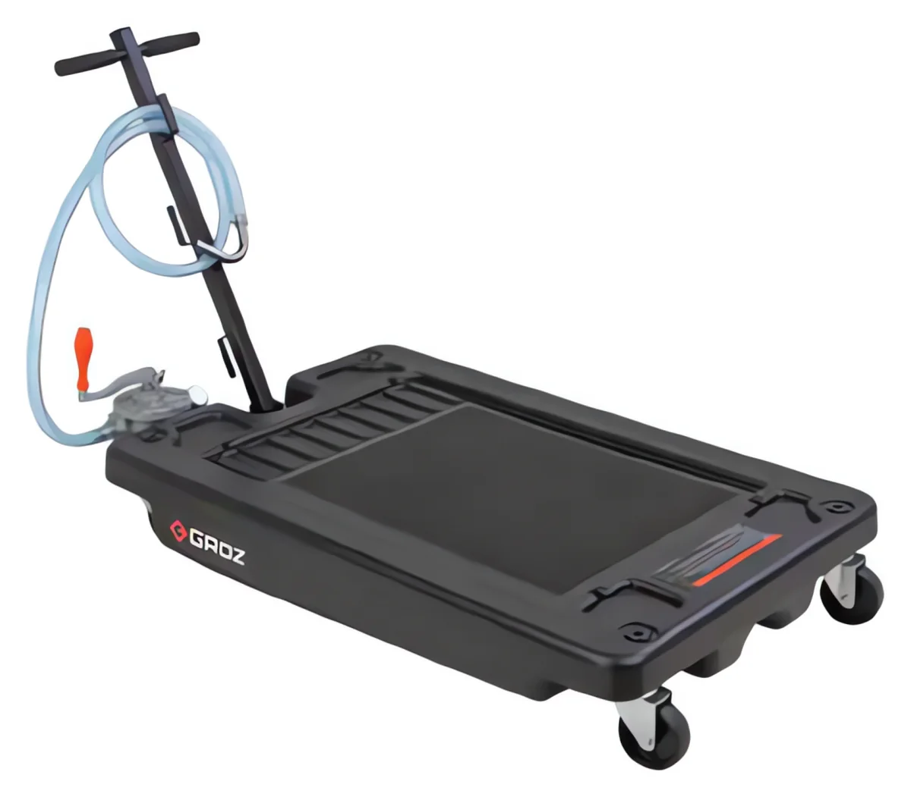

GROZ · Waste Oil Handling
Plastic Truck Drain
CAT NR TD/17P · ORD NR 45811
| CAT NR (catalogue number) | TD/17P |
|---|---|
| ORD NR (order number) | 45811 |
| Box quantity | 1 |
| Description (printed in table) | Truck Drain with Manual Rotary Pump |
| Discharge hose - 6' (1.8 m) | Yes |
| Feeder hose- 1.25' (380 mm) | Yes |
| Pump flow rate | 1 litre (0.25 gal.)/5 strokes |
| Steel spout | Yes |
Open in the catalogue The catalogue PDF, page 213
From the GROZ Fluid Handling CC-07 catalogue. Not yet verified: these details were read from the printed catalogue automatically; check the catalogue page before ordering.